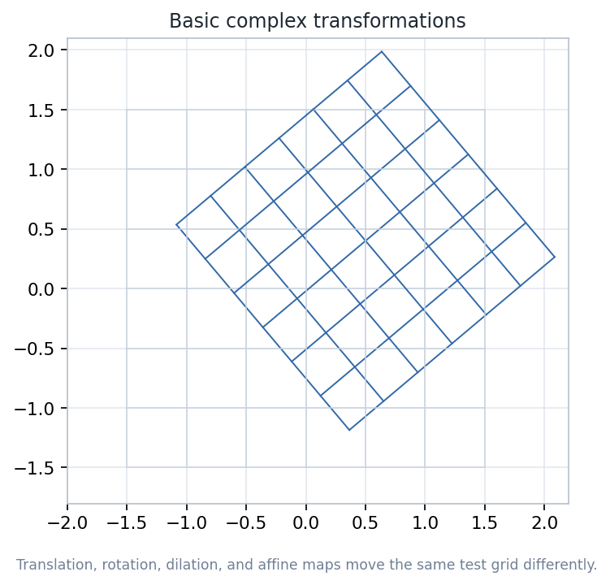
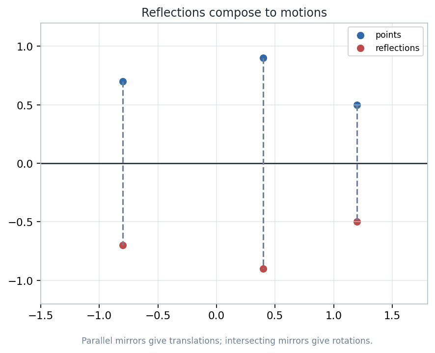
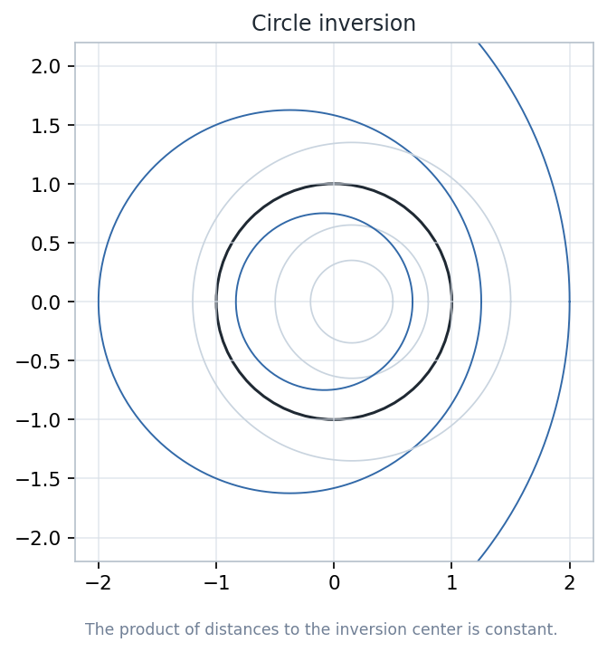
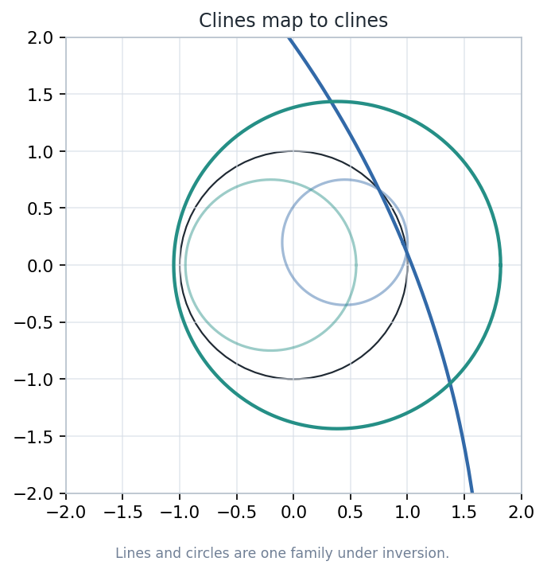
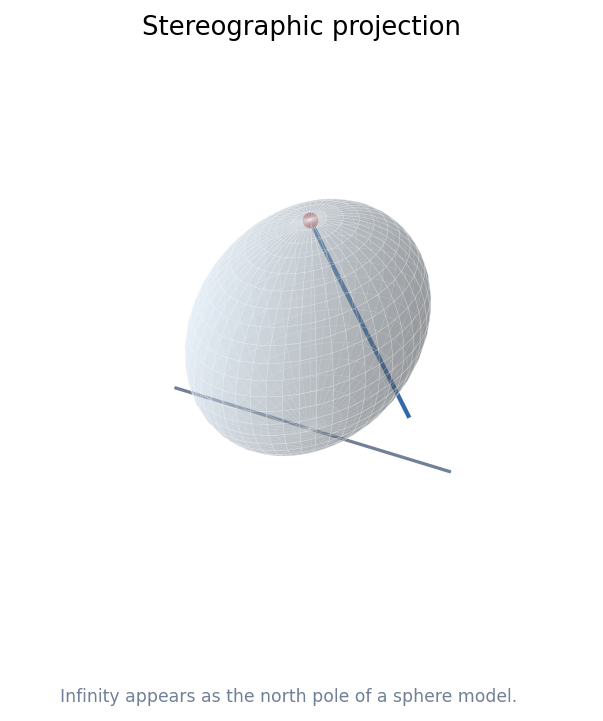
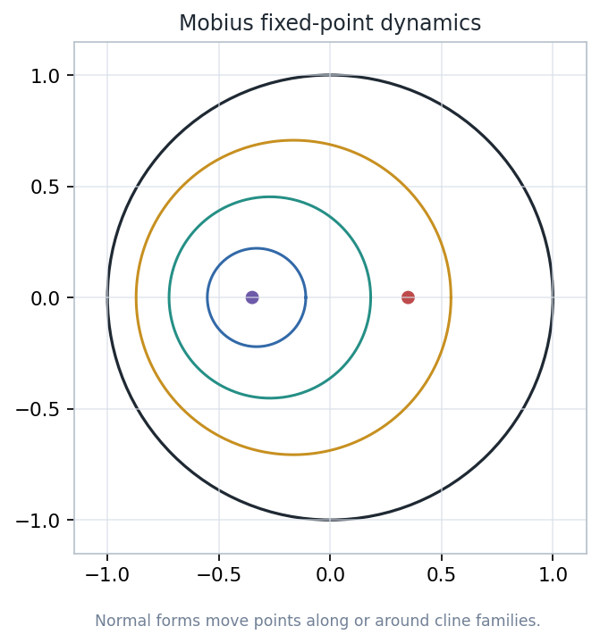

A lecture on affine motion, inversion, clines, the extended complex plane, and Mobius maps as a language for geometry.
Every slide asks: what is the space, what is allowed to move, and what measurement or incidence statement remains recognizable after the move?
A transformation is a rule on a model space whose geometry is read from the features it preserves and the features it deliberately changes.
A transformation is useful when a visible before-and-after comparison can be paired with a computable invariant.
Track the same square grid under four simple maps. The grid is not the theorem; it is a measuring device for distortion.

Derived from the chapter notebook artifact: basic-transform-grid.png.

Parallel mirrors produce a translation; intersecting mirrors produce a rotation.
Two reflections restore orientation. Their product is a translation when the mirror lines are parallel and a rotation when the lines meet.
Transformation groups are not lists of isolated formulas. They are generated by simple moves whose products organize the geometry of a model.
For a nonzero point z, inversion sends it along the same ray to a point whose distance from the origin is reciprocal.
Inversion preserves angles in magnitude, but it does not preserve distances and it reverses the inside/outside relation of the unit circle.

The radial product check is the visual invariant for this slide.
A circle inversion preserves the magnitude of the angle between two smooth curves at an intersection point away from the center.
The slide gives a proof roadmap, not a full algebraic proof. The algebraic derivative calculation can be assigned after the visual argument lands.
A cline is either a line or a circle in the extended complex plane. This single word is the right object language for inversion and Mobius maps.

Once infinity is admitted, line and circle behavior becomes one stable family.

Stereographic projection turns the extended complex plane into a sphere model.
The complex plane plus one point, denoted \infty, lets transformations send lines to circles and still remain functions on one compact model.
Infinity is not a distant endpoint on a ruler. It is the single point that closes the plane so clines and rational maps have clean global behavior.
A Mobius transformation is a fractional linear map with nonzero determinant, acting on the extended complex plane.
Translations, rotations, dilations, and inversion generate the family. This makes the formula less mysterious and the geometry more inspectable.
For four distinct points, the cross ratio is unchanged by every Mobius transformation for which the expressions are defined.
Choose four points, apply a sampled Mobius map, and compare the two complex numbers. The residual should be near numerical roundoff.
Instead of plotting every orbit, first solve M(z)=z. The number and type of fixed points predict the qualitative motion.

Normal forms make orbit geometry visible before classification vocabulary is memorized.
The Poincare disk model uses clines orthogonal to the boundary circle as hyperbolic lines. Mobius transformations preserving the disk preserve that incidence condition.
Chapter 3 builds the transformation vocabulary; later chapters use it to define non-Euclidean straightness and distance without abandoning complex coordinates.
Conformal maps preserve angle magnitude locally, but lengths and areas can change dramatically.
A circle through the inversion center may become a line, so separate line/circle casework hides the stable object.
The point at infinity is not decorative notation; it makes rational maps and clines behave globally.
A correct coordinate picture can still mislead about intrinsic measurement. Always say which model is being drawn and which invariant is being checked.
Pick four noncollinear complex points, apply M(z)=(2z+1)/(z+3), then compute both cross ratios.
A strong answer includes a diagram, a numerical residual, and a sentence explaining why the residual is the right measurement.
The Erlangen viewpoint turns this chapter's transformation vocabulary into a definition of geometry itself: a space together with its chosen transformation group.